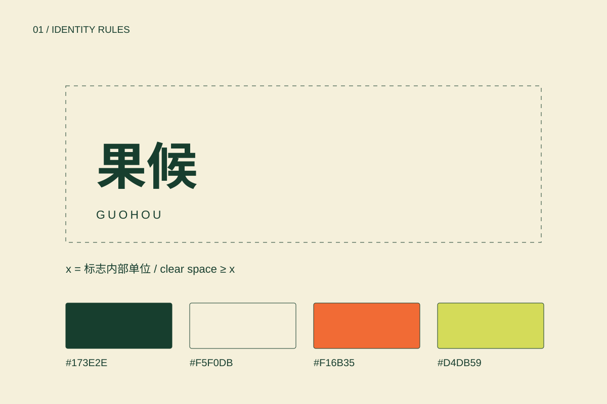
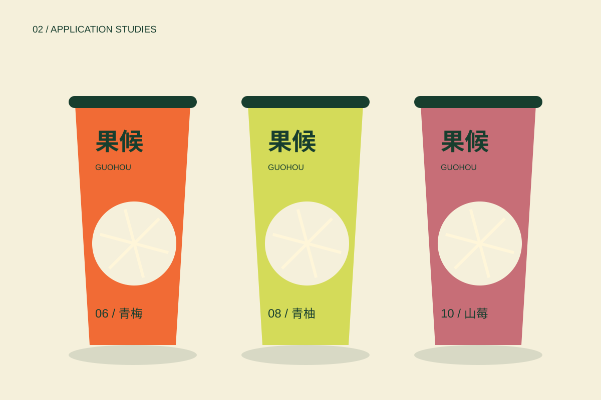
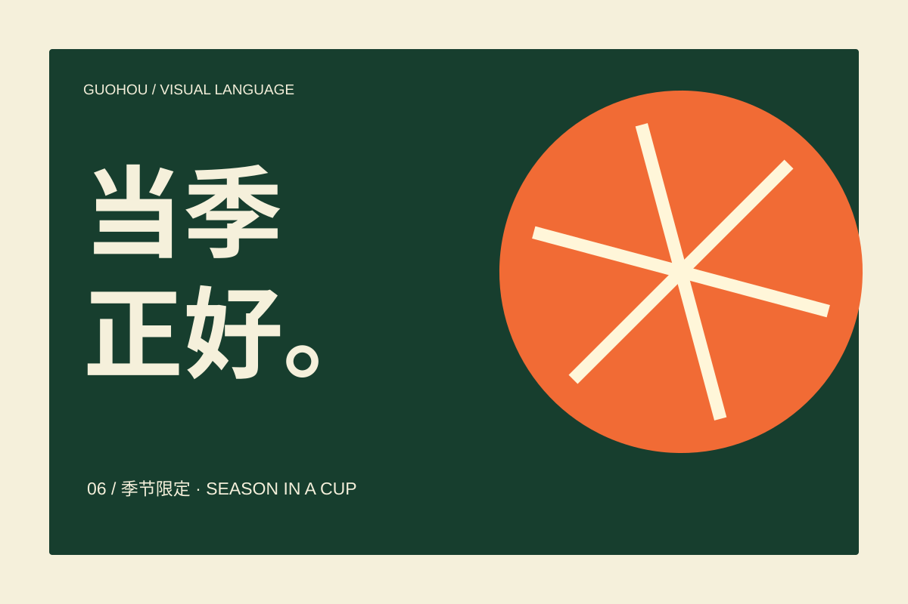

01 / Seasonal fruit drinks
果候
以时令为线索，让每一季新品仍然属于同一个品牌。

01 / THE BRIEF
从问题到规则。
果饮产品频繁更新，包装容易随口味变成彼此无关的设计。方案用月份、切面与色谱建立稳定框架，让上新有变化，识别有连续性。
选择圆形切面而非水果写实摄影，让同一图形能在杯身、海报和数字界面保持一致。
本项目为自主概念设计，产品、菜单、价格与空间均为设计设定；尚未进行商标检索、打样或门店落地。
02 / CORE IDENTITY
识别的骨架。

RULE / 01标志周围至少留出一个“口”字内框宽度的空间；横排字标建议不小于28 mm，屏幕不小于120 px。
RULE / 02深绿为主要文字色；奶油白作底。橙、柚黄、莓红只用于口味编码，不用颜色单独传达产品信息。
RULE / 03标题使用系统黑体粗体，正文使用系统黑体常规；中英信息分层，口味名称优先，月份编号其次。
RULE / 0412栏网格，外边距为画面宽度的6%；圆形切面允许出血，但不能裁断产品名称与配料信息。
03 / COLOUR & TYPE
让变化保持一致。
#173E2E
#F5F0DB
#F16B35
#D4DB59
中文 Aa / 0123456789
主标题 64–120 px，章节标题 32–48 px，正文 16–18 px，注释至少 12 px。正文行高 1.7–1.85；移动端保持阅读顺序与文字对比。
语气与文案
清爽、具体、有时令感。示例：“六月，给青梅留一个位置。”避免“排毒”“治愈”等效果用语。
网页使用设备自带字体，不分发字体文件。当前字标为字体排印提案；正式矢量字形定制、字体授权及印刷色样需在生产前完成。
04 / IN CONTEXT
从主视觉走到日常。

TOUCHPOINT / 01冷饮杯：正面固定标志与月份编号，背面预留配料、过敏原及门店信息。此处为概念包装，非生产标签。
TOUCHPOINT / 02季节菜单：以月份分组，口味名称旁同时标注文字及色块；所有价格均为版式示例。
TOUCHPOINT / 03外带袋与封签：深绿单色印刷，封签承担季节色，降低每季更换整套包材的需求。
应用均为原创矢量示意，非实物摄影或已落地项目证明。
05 / VISUAL LANGUAGE
一句话，一个画面。

06 / IMPLEMENTATION
规范也包括边界。
使用检查
不拉伸标志比例；不添加阴影和描边；不在复杂背景上直接压小字；不以颜色作为唯一信息编码；保留名称与必要说明的安全区。
交付与下一步
本轮交付网页案例、4张可编辑SVG展示板与可打印的规范页面。生产前还需校验最小尺寸、字形与商标、CMYK打样、真实包装刀模与实际服务信息。

07 / CONTEXT & CREDITS
来源与创作说明。
品牌定位、图形与应用由本次项目自主构思。
研究参考：Pentagram / Parla（品牌触点的一致性）、Pentagram / Bacàn（文字节奏与空间识别）、BUCK / Headspace（形状叙事）。仅研究方法，不使用对方图片、字体、标志或图形资产。
本次新增文案、SVG图形与网页由 AI 辅助构思和制作，供鼎翊作品集探索与后续深化。真实项目原有创作者与权利归属保持不变；本页不宣称任何商业或医疗效果。